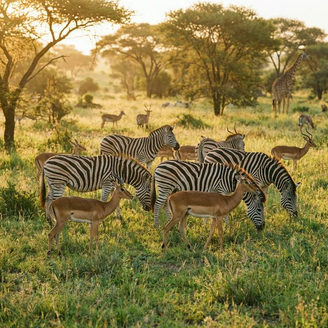

What Do Lions Eat?

Lions are Carnivores
A carnivore is an animal that eats meat. Lions are big hunters!
They mostly eat other large animals like:
- Zebras (the ones with stripes!)
- Antelopes and Wildebeests
- Buffaloes
Hunting Together
Female lions, called lionesses, do most of the hunting. They work together as a team to catch their food. This is called a pack or a pride.
Lions usually hunt at night because it is cooler and easier to sneak up on other animals.
Do They Drink Water?
Yes, but they can go for days without drinking water if they need to. They get some moisture from the food they eat, but they love to drink from waterholes when they can.